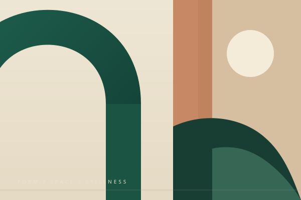
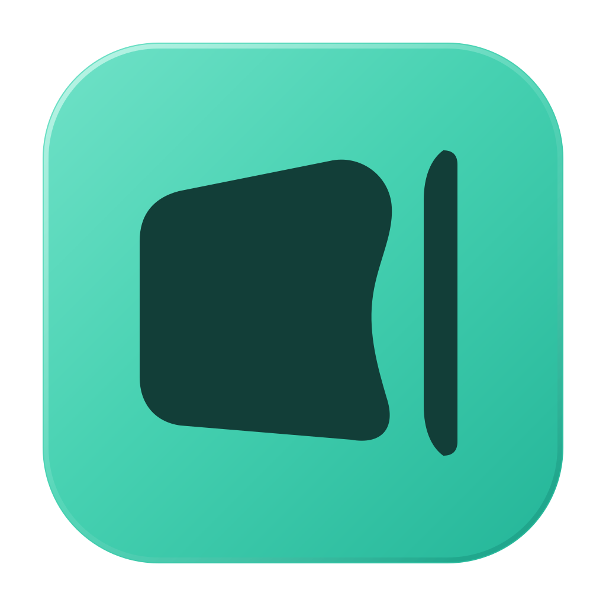

照常截下眼前的内容。
保留原来的 macOS 系统截图习惯。Riftlet 收录受支持的截图，让可辨认的小图在屏幕边缘等你。
截图轻驻 Mac 屏幕边缘。点一下，附加到当前受支持的 ChatGPT 对话草稿。
写好的话保留，何时发送由你。
macOS 原生工具 · 正在内部测试。
公开版本尚未发布。查看当前支持范围 ↗

点一下右侧边缘的小图。
放大的机制示意；不读取屏幕，不连接真实 ChatGPT。
一个布局，一张图表，一处难以用文字说清的细节。你想问的问题，就在屏幕上。
Riftlet 给刚截下的内容留一个位置。照常截图，继续思考；需要时，轻点边缘的那张图。
刚刚的画面，露出一点就能认出。固定的位置，让取用不再需要寻找。
刚截下的内容停在边缘，不用展开另一块面板。
宽图、竖图，各自保留比例，更容易辨认。
空队列时，连边界也一起隐去，把屏幕还给你。
决定用哪一张，也决定什么时候把它放进对话。
让截图留在手边，让屏幕继续属于眼前的工作。
动效跟着操作发生。轻轻说明交接到了哪一步，不再额外占用你的注意。
保留原来的 macOS 系统截图习惯。Riftlet 收录受支持的截图，让可辨认的小图在屏幕边缘等你。
在受支持的 ChatGPT 对话中，点一下边缘微图。目标绑定为这次操作所对应的草稿。
确认已经开始附加后，小图快速进入边界。最终完成稍后到来，草稿始终不会自动发送。
交接的目标是追加图片，同时保护草稿中已有的文字与附件。说什么、何时发送，都由你决定。
可在同一个本地演示中查看异常状态。它们是交互契约的条件模拟；原生产品的安全失败恢复准入仍关闭。
演示会重置示例图片，保留你输入的文字。不确定结果留在历史中，不会盲目重复上传。
原生 App 已有区域、窗口、全屏三种方式。实机核验与附加准入仍在继续，不把它们提前算作全场景可用。
留住近期截图与操作状态，需要时可回看。无需把它维护成另一座图库。
「无」与「磁力吸引」。它们决定新截图怎样到来；确认开始附加后的快速离场，仍是独立行为。
调整边缘，主动提交建议。反馈服务已上线，完整 Mac 原生窗口到服务的流程仍在核验。
想法很简单，可靠交接需要细心打磨。Riftlet 正在内部测试，附件流程仍按限定场景核验。

当前附件测试仅覆盖特定 Chrome / ChatGPT 条件。普通启动仍以截图收录为主，生产附件能力尚未开放。
尚未提供公开、公证的正式版本。目前有 ARM 与 Intel 内部构建，但不等于面向一般用户的发行版。公开测试准备好后，项目会提供对应的安装说明。
当前准入测试限于 Chrome 中中文 ChatGPT 网页的特定普通已有对话，以及受约束的 PNG 输入。其他浏览器、ChatGPT Mac App、Home 新草稿与 Work 均不宣称已支持。
不会。产品契约是把图片追加到草稿，绝不自动发送消息。这个网页只改变本地示例内容，发送标记也不会执行发送。
原生截图队列与历史保存在本机。主动附加时，选中的图片会进入受支持的 ChatGPT 草稿；自愿反馈使用独立服务。这不等于宣称完整 App 全程离线。
不会读取你的屏幕、剪贴板或 ChatGPT 账号。演示使用原创合成素材，输入的文字与附件状态仅在本页内存中处理；本页不上传，也不主动写入持久存储。没有分析脚本、账号或提交表单。
Riftlet 是独立产品。ChatGPT 属于第三方服务；这里不表示官方合作、背书或对所有使用场景的兼容承诺。